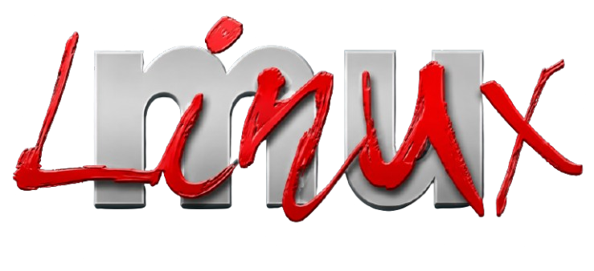
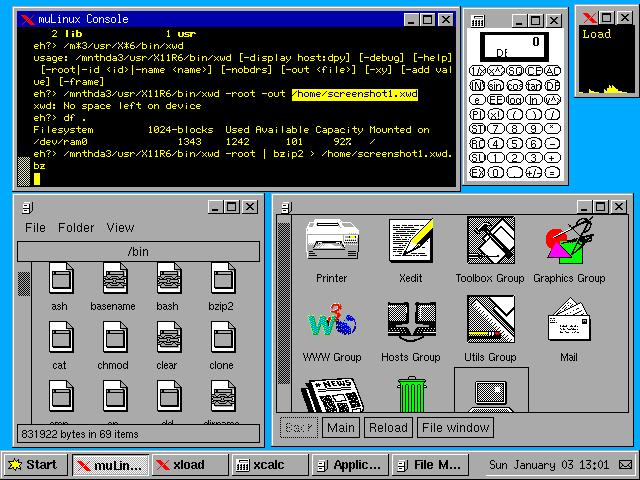
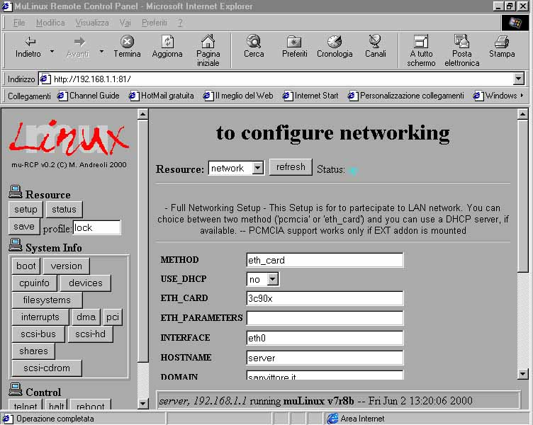
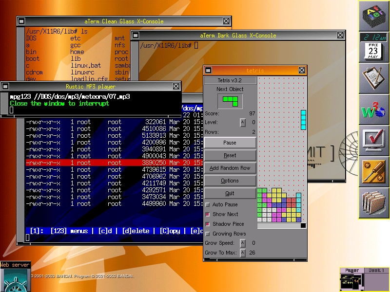
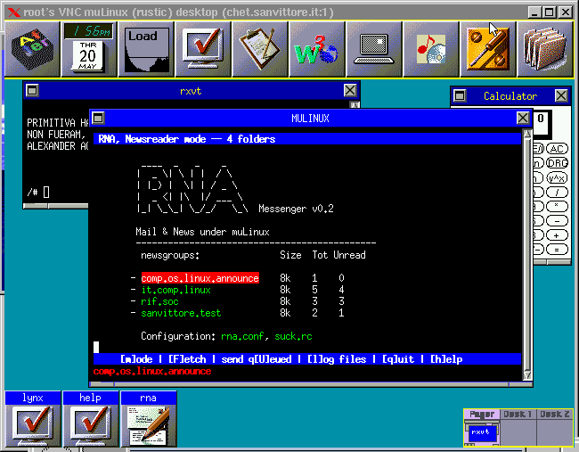
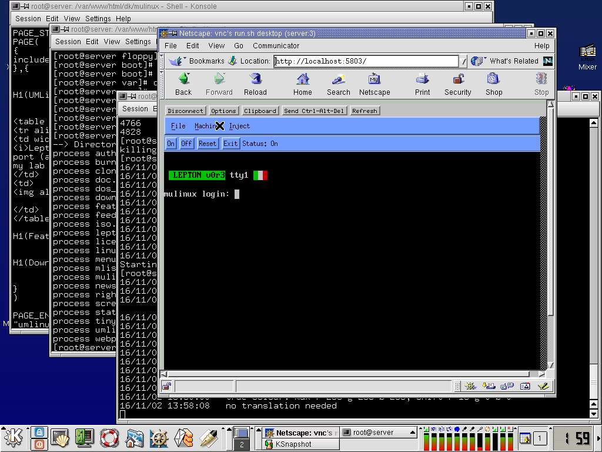
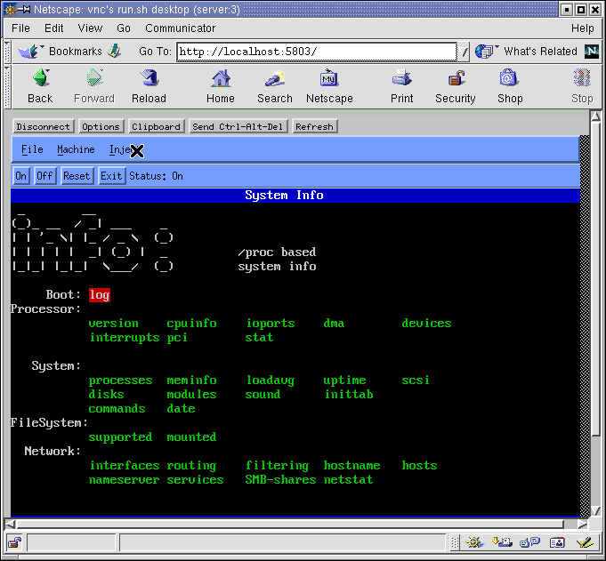

PTSource
|  |
MuLinux was an Italian, English-language lightweight Linux distribution maintained by mathematics and physics professor Michele Andreoli, meant to allow very old and obsolete computers (80386, 80486 and Pentium Pro hardware dating from 1986 through 1998) to be used as basic intranet/Internet servers or text-based workstations with a UNIX-like operating system. It was also designed for quickly turning any 80386 or later computer into a temporary, powerful Linux machine, along with system repair, education, forensic analysis and what the developer called proselytizing. In 2004 reviewer Paul Zimmer wrote, "Although there are several other single-floppy Linux distributions, none can match MuLinux's extensive and unique combination of useful features." The last version update was in 2004, when further development of this "linux-on-a-floppy" distribution ended.
The original author and mantainer of muLinux was Michele Andreoli. M.A. is an italian prof. in Mathematics and Physics, but he also works as independent consultant for companies interested in embedded Linux projects.
PTSource Mulinux is a dedicated initiative focused on maintaining and sustaining the legacy of professor Michele Andreoli's MuLinux project. MuLinux, renowned for its minimalistic design, is a lightweight, flexible Linux distribution that can run on older hardware with limited resources. PTSource Mulinux aims to preserve this valuable piece of open-source history by updating and improving the existing MuLinux codebase, ensuring compatibility with modern systems while retaining its original simplicity and efficiency. The project also emphasizes community engagement, encouraging contributions and support to keep the spirit of MuLinux alive for future generations of users and developers.
MuLinux is licensed under GPL, the General Public License from GNU.
BASE FLOPPY: --------------- 3c509 3c509 EtherLink3 3c59x 3Com "Vortex" and "Boomerang" ne NE2000 compatible ne2k-pci PCI ne2000 clones wd smc-ultra SRV addon: --------------- 3c90x EtherLink 10/100 PCI (3c905B, ec905C, etc) eepro Intel EtherExpress Pro/10 eepro100 Intel i82557 Ethernet eexpress Intel EtherExpress 16 rtl8139 RealTek RTL8129/8139 Fast Ethernet driver pcnet32 AMD PCnet32 ethernet driver
This is /bin,/sbin,/usr/bin and /usr/sbin bin: agetty crypt finger ln printf shutdown umount ash date fqn load ps sleep umssetup -ash dd free login pwd swapoff umssync basename df gateway logname ra swapon uname bash dirname getpwd losetup README sync uniq -bash dmesg grep ls reboot tar unix2dos busybox domainname gunzip lsmod reset tcpmon update bzip2 dos2unix gzip menu rgrep tee which cat echo halt mkdir rm tell xwindow chmod expr hostname mkswap rmdir timeit zcat chown fastdd insmod more rmmod timeout zless chvt fdflush kill mount roclone timex clear fdformat killall mv scan tips clone fdisk killall5 netstat sed touch cmp fgrep less od setup tr cp file liloconfig pidof sh type sbin: chkpasswd init setlevel usr/bin: addon-wizard e3ws iw pciprobe sort adduser edit keymap-wizard peek stty anacron editor-wizard lang-wizard ping suck apps eject less pion supermount at ethconfig lilo playcd systest atd ex loadkeys plog tail atq fax lpq poke tcpdump atrm fetchmail lpr ppp tcpmon awk file lprm pppd tell banner find m4 ppp-log telnet bc finger mail ppp-off telnet2 binpatch fmt man ppp-on time browser formail mawk pr tinyirc cal format mc printer-wizard traceroute call ftp md5sum ps tty cardmgr ftpget menu pscan uniq cdp gagconfig minicom quark upgrade cd-player gpm miterm random vcm cdrom-wizard grep mixer rc6crypt vi chat hdparm mke2fs readchar video-wizard chroot help mkfloppy read_until vplay clock hexd mkfs.ext2 redir vrec connected ifconfig modem-wizard report vsetup counter ile mon rlogin wave dhcpcd inews mouse-wizard rmmod wc diald info muawk rna welcome dialog insmod mucal route whois du internet-wizard muhex rpost wizard e3 ip_broadcast muless sendmail xfdisk e3em ipf nc setserial xopen e3ne ipfwadm netled smbmount xwindow e3pi ip_network news sms e3vi irc nmap soft-shutdown usr/sbin: cron in.faxd in.identd in.rlogind in.telnetd mugetty run-parts identd in.ftpd in.pygmy in.seriald in.telnetd-rustic pygmy




This tarball contains the BASE floppy (split in BOOT, ROOT.gz, USR.bz2) and the mulinux source tree, plus docs etc.
You can optionally download additional kernel modules for the 2.0.36 Linux kernel, or additional misc programs for mulinux.
Download the Dos installer and tools: DOSTOOLS
UMSDOS (Unix-like File System for DOS) is a filesystem driver that allows Unix-like operating systems, such as Linux, to be run on top of MS-DOS or Windows 9x systems. It was developed to facilitate the use of Linux on systems where a native Linux partition was not feasible. UMSDOS achieves this by using the existing FAT (File Allocation Table) filesystem while providing Unix filesystem features such as long filenames, file permissions, and symbolic links. This enables users to install and run Linux without repartitioning their hard drives. Although UMSDOS was popular in the early days of Linux, it has largely been superseded by more modern filesystems and installation methods.
For pure DOS computers, you can use the bare zip archive c:\> pkunzip mu13r2.zip
As usual, if your system supports loadlin.exe, you can run muLinux from Win/DOS with: c:\> cd c:\linux c:\> linux.bat |
| Installation Vs Cloning |
The word Installation in muLinux should be not used, because muLinux
runs primarily in the RAM, booting from a set of floppy disks (base floppy + add-on).
We reserve the word (installation) in order to describe the
process where the images you downloaded are transferred to the floppies
(see: Linux Install, and Dos Install).
Nevertheless, it can be cloned on permanent media, such an
hard-disk.
In order to clone muLinux in some destination target machine,
you must follow these steps:
| CD-ROM cloning |
Once you have cloned to the HD, you can re-clone it into a different partition, if you like, and can also clone it on a CD-ROM (press "clone" and select "CDROM")
| Direct cloning |
This feature is only for Windows installers. After they have followed the installation procedure, they can choose to immediately clone in the
c:\linux directory, skipping the floppy-disk set creation.
This the only case where the word installatiion may apply with the
usual meaning.
| Installing from a Linux box |
In Linux, you have the script called "mu". Please, obtain help with "mu -h".
| Installing from a DOS/Win box |
Requirements ----------------- You will need: 1) Some 1.44Mb diskettes, formatted OR unformatted, but without bad blocks. (1 for the installation disk, 1 for the boot disk and 1 for each addon you wish to configure) 2) DOS, Win3.11, Win95, Win98, WinNT, Win* already installed. UNPACKING THE archives ----------------------------- 1) Create a new directory (eg. c:\mulinux) and move DOSTOOLS.zip, mulinux-13r2.tgz and the addons into it. 2) Unzip DOSTOOLS.zip using pkunzip or equivalent (Winzip).c:\mulinux> pkunzip DOSTOOLS.zip3) Run unpack.batc:\mulinux> unpackThis will unpack the main archive mulinux-13r2.tgz METHOD 1: using the Installer Disk (Suggested for WinNT) -------------------------------------------------------- a) Run makefi.bat (formerly makefd.bat) in a DOS window:c:\mulinux> makefiThis will create the "Installation Disk". It is formatted as usual, i.e. 1440k. b) Put this disk in the drive and reboot METHOD 2: PC without floppy drive ---------------------------------- a) Restart in "full DOS mode" and run boot.bat:c:\mulinux> bootUsing this method, no InstallerDisk is needed. METHOD 3: lowmem machine, 386 with RAM < 4M (new!) -------------------------------------------------- Starting from muLinux 11r3, you can install with 4M also using methods 1 or 2. But if they don't work, try with this. a) Run the maker.bat (make root) script:c:\mulinux> makerThis will create the ROOT (1722k) disk, ext2fs mountable. It works only if your floppy drive supports 1722k super-formatting. b) Run the lowmem.bat script:c:\mulinux> lowmemThis will start Linux and will not use ramdisks at all. This is the only script that does not use additional RAM for the filesystem itself. After booting, you will be asked to enter the ROOT floppy: please, enter the floppy you made in a). NOTE 1: SCSI disks ------------------- The installation Disk will also work with SCSI peripherals supported by AIC7xxx series cards, i.e. you can put DOSTOOLS.zip, mulinux.tgz and addons in SCSI partitions or a ZIP floppy with SCSI interface, and run 'makefd'. NOTE 2: SCSI disks ------------------- If you wish only to make the standard single floppy Linux, i.e. the boot+root+usr traditional diskette, from DOS, please use the "makebru" (make boot,root,usr) script:c:\> makebru <\pre> It works only if your floppy drive supports 1722k super-formatting. Warning ---------- The installation disk boots an instance of Linux which is used to create the various muLinux floppies. The system should automatically detect the location of the mulinux image files, (however you may be asked to enter the path yourself (eg. /mulinux/)) and you will then be prompted to insert 3.5" high-density floppy disks to create the muLinux boot disk and each of the add-on disks in turn. If you wish to create a permanent Hard-Drive installation, boot muLinux and issue the command "clone" at the prompt.
| What is Lepton |
| Lepton is the temporary name for a single floppy Linux, based on the kernel series 2.4.x. It is my lab where I do experiment with the framebuffer device in Linux. |
| Features |
| Binaries in the disk |
From Debian Busybox
agetty chroot dmesg echo head login pidof rmmod tar uptime ar chvt domainname env hostname ls ping route tee vi ash clear dos2unix false id lsmod poweroff sed tftp wc -ash cmp du fbset insmod mkdir printf sh touch wget basename cp dumpkmap find kill mknod ps sleep tr which bash create.kmap e3 free killall mkswap pwd sort true whoami busybox cut e3em gateway killall5 modprobe rdate stty tty xargs cat date e3ne grep ln more reboot swapoff umount yes chgrp dd e3pi gunzip loadkeys mount reset swapon uname zcat chmod df e3vi gzip loadkmap mv rm sync uniq chown dirname e3ws halt logger nc rmdir tail unix2dos init insmod modprobeFrom Rustic Busybox
ip_broadcast ip_network modprobe msg scan bb fastdd fortune hdparm ile mawk mon pion screen_saver timeout chkpasswd fbppm fsck.ext2 help info md5sum muawk poke setconsole wave crypt fdformat ftpget hexd j2 miterm muhex random setlevel xopen expr fdisk gpm ifconfig less mixer muless readchar time
| Download Lepton |
| How to copy Lepton on the floppy disk |
# fdformat /dev/fd0u1722 # cat lepton-VERSION.raw > /dev/fd0u1722 # syncYou need Linux, for that. DOS/Win9x users can use muLinux (in this case).
| UMLinux Virtual Machine |
In this demo, you can see (and use it) mulinux-lepton running in a window, in your Netscape environment. To have a 32 bit operating system, such as Linux, running in a window isn't a everyday event.
The demo uses VNC and UMLinux virtual
machine, and runs on my desktop Linux computer, at this
url (no password required)
If my machine is down, you can see some screenshots, below.
I will keep the demo active for only a short period, because it is
resource expensive and I do not know how it will behave if used
by many users simultaneusly! (it runs a single instance OS)
| Screenshots |


| Download |
I made an archive with UMlinux+Lepton setup. You can download and run it on your system.
To run this demo you need
72Mb free space in /tmp and you must run at least a 2.2.15 Linux kernel.